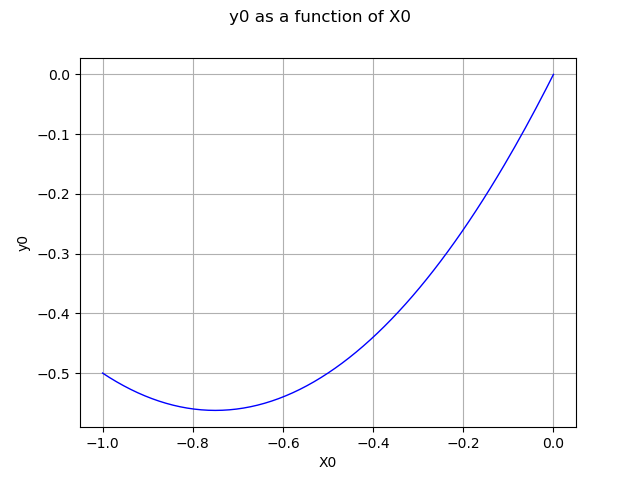
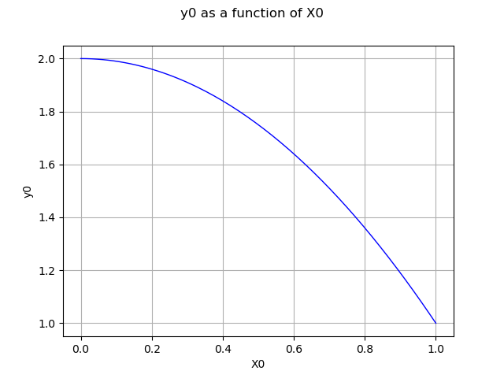
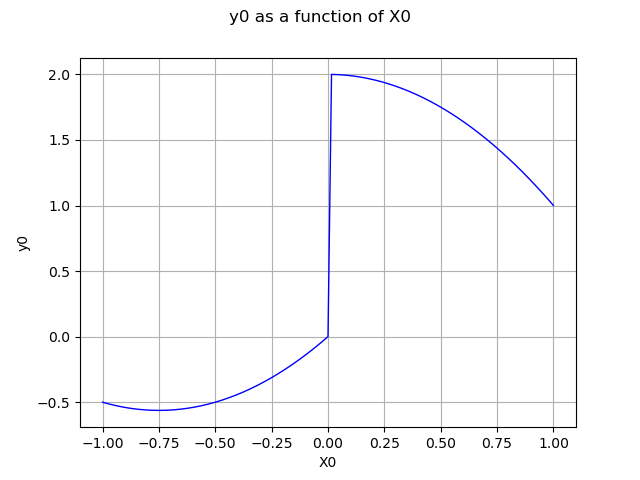

Note
Go to the end to download the full example code
Mixture of experts¶
In this example we are going to approximate a piece wise continuous function using an expert mixture of metamodels.
The metamodels will be represented by the family of ![f_k \forall \in [1, N]]() :
:
![\begin{align}
f(\underline{x}) = f_1(\underline{x}) \quad \forall \underline{z} \in Class\, 1
\dots
f(\underline{x}) = f_k(\underline{x}) \quad \forall \underline{z} \in Class\, k
\dots
f(\underline{x}) = f_N(\underline{x}) \quad \forall \underline{z} \in Class\, N
\end{align}]()
where the N classes are defined by the classifier.
Using the supervised mode the classifier partitions the input and output space at once:

The classifier is MixtureClassifier based on a MixtureDistribution defined as:
![p(\underline{x}) = \sum_{i=1}^N w_ip_i(\underline{x})]()
The rule to assign a point to a class is defined as follows:  is assigned to the class
is assigned to the class ![j=argmax_j \log w_kp_k(\underline{z})]() .
.
The grade of with respect to the class  is
is  .
.
import openturns as ot
from matplotlib import pyplot as plt
import openturns.viewer as viewer
import numpy as np
ot.Log.Show(ot.Log.NONE)
dimension = 1
# Define the piecewise model we want to rebuild
def piecewise(X):
# if x < 0.0:
# f = (x+0.75)**2-0.75**2
# else:
# f = 2.0-x**2
xarray = np.array(X, copy=False)
return np.piecewise(
xarray,
[xarray < 0, xarray >= 0],
[lambda x: x * (x + 1.5), lambda x: 2.0 - x * x],
)
f = ot.PythonFunction(1, 1, func_sample=piecewise)
Build a metamodel over each segment
degree = 5
samplingSize = 100
enumerateFunction = ot.LinearEnumerateFunction(dimension)
productBasis = ot.OrthogonalProductPolynomialFactory(
[ot.LegendreFactory()] * dimension, enumerateFunction
)
adaptiveStrategy = ot.FixedStrategy(
productBasis, enumerateFunction.getStrataCumulatedCardinal(degree)
)
Segment 1: (-1.0; 0.0)
d1 = ot.Uniform(-1.0, 0.0)
X1 = d1.getSample(samplingSize)
Y1 = f(X1)
fc1 = ot.FunctionalChaosAlgorithm(X1, Y1, d1, adaptiveStrategy)
fc1.run()
mm1 = fc1.getResult().getMetaModel()
graph = mm1.draw(-1.0, -1e-6)
view = viewer.View(graph)

Segment 2: (0.0, 1.0)
d2 = ot.Uniform(0.0, 1.0)
X2 = d2.getSample(samplingSize)
Y2 = f(X2)
fc2 = ot.FunctionalChaosAlgorithm(X2, Y2, d2, adaptiveStrategy)
fc2.run()
mm2 = fc2.getResult().getMetaModel()
graph = mm2.draw(1e-6, 1.0)
view = viewer.View(graph)

Define the mixture
R = ot.CorrelationMatrix(2)
d1 = ot.Normal([-1.0, -1.0], [1.0] * 2, R) # segment 1
d2 = ot.Normal([1.0, 1.0], [1.0] * 2, R) # segment 2
weights = [1.0] * 2
atoms = [d1, d2]
mixture = ot.Mixture(atoms, weights)
Create the classifier based on the mixture
classifier = ot.MixtureClassifier(mixture)
Create local experts using the metamodels
experts = ot.Basis([mm1, mm2])
Create a mixture of experts
evaluation = ot.ExpertMixture(experts, classifier)
moe = ot.Function(evaluation)
Draw the mixture of experts
graph = moe.draw(-1.0, 1.0)
view = viewer.View(graph)
plt.show()
